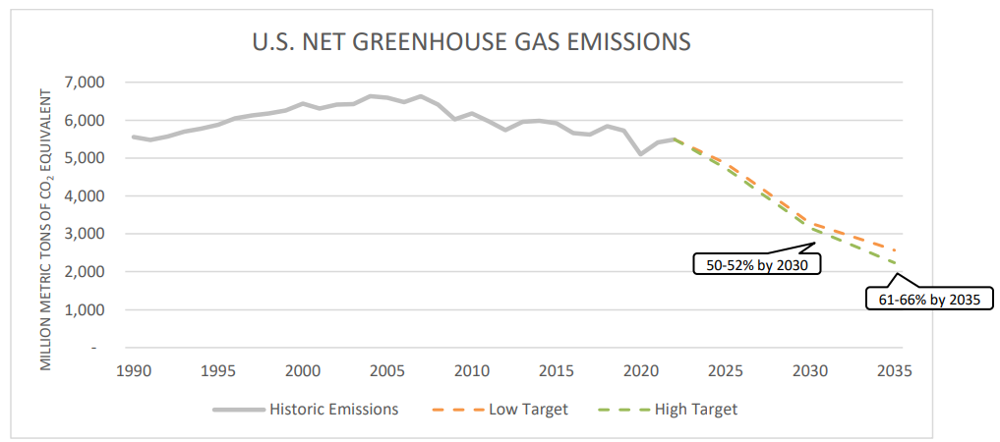

The Paris Agreement establishes a goal of holding the increase in the global average temperature to well below 2oC above pre-industrial levels and pursuing efforts to limit the temperature increase to 1.5oC above pre-industrial levels. This submission communicates the United States' nationally determined contribution (NDC) toward this goal, in line with Article 4 of the Paris Agreement and subsequent decisions of the Parties.
Climate change is an existential threat and demands bold global mitigation action, particularly by all major emitters. The United States has the technology to reduce net emissions rapidly while supporting economic opportunity and growth, improving quality of life, and delivering environmental justice in the United States. Addressing the climate crisis requires tackling all emitting sectors of the economy and all greenhouse gases, scaling up the many solutions we already have, while investing in innovation to broaden the set of solutions, enabling multiple pathways to reach net zero emissions in the United States by 2050.
After a careful process involving analysis and consultation across the U. S. federal government, and with leaders in subnational and Tribal governments, civil society, and the private sector, the United States is communicating an economy-wide target of reducing its net greenhouse gas emissions by 61-66 percent below 2005 levels in 2035. The entire 2035 range is on a straight line or steeper trajectory to net zero emissions by 2050 for all greenhouse gases.
Due to the federal structure of the United States, the actions of subnational and Tribal governments will be critical to achieving the 2035 emissions target. Successful achievement of the NDC also depends on cooperation and communication between the public and private sector, including the sharing of best practices as well as implementation alignment across jurisdictions and across entities, as appropriate considering local conditions. Broad participation in the development, implementation, and evaluation of emissions reduction measures will play an important role in reaching the target.
While this submission does not set NDC sub-targets for individual gases, the United States anticipates, as part of achieving its 2035 NDC emissions target, methane reductions of at least 35 percent from 2005 levels in 2035. Cutting methane emissions is among the fastest ways to reduce near-term warming and is an essential complement to carbon dioxide (CO2) mitigation.
The United States also reaffirms the calls for action in the first global stocktake decision, adopted by the 5th Conference of the Parties serving as the meeting of the Parties to the Paris Agreement, including the call for all Parties to contribute to the global efforts to accelerate the global phasedown of unabated coal power and global transition away from fossil fuels in energy systems in a just, orderly, and equitable manner.
The development of the United States 2035 NDC engaged a whole-of-government process, led by the National Climate Advisor and the White House Climate Policy Office with the Senior Advisor for International Climate Policy and the State Department's Office of the Special Presidential Envoy for Climate, and it was approved by President Joseph R. Biden, Jr.
U.S. NET GREENHOUSE GAS EMISSIONS

United States Historic Emissions and Projected Emissions Under 2035 Target
Since the communication of the 2030 NDC in April 2021, the United States executed a broad and comprehensive climate strategy that reaches for the opportunities to reduce emissions and spur economic growth in every sector and every region of the country. Advanced through hundreds of policies and measures undertaken by federal, state, territorial, Tribal, and local governments, the strategy includes historic passage of the Bipartisan Infrastructure Law (BIL) and the Inflation Reduction Act (IRA). The catalytic investment from these landmark laws, enhanced by a complementary architecture of federal standards, have equipped the public and private sector with additional resources and regulatory certainty to grow a new clean energy economy that benefits American workers and consumers. Implementation of this broad and comprehensive strategy, including of BIL and IRA, has already led to more than $450 billion of private sector investment in domestic clean energy and manufacturing projects. This progress will accelerate as these landmark laws will continue to drive a wide range of investments in clean energy deployment and manufacturing that support additional emissions reductions across every sector of the economy.
The United States met and surpassed its 2020 target of net economy-wide emissions reductions in the range of 17 percent below 2005 levels, its initial Paris Agreement target set in 2015. The United States is also in a strong position to achieve its target of 50-52 percent emissions reductions below 2005 levels in 2030, propelled by the progress made since communication of the 2030 NDC in April 2021, including passage of BIL and IRA. Furthermore, under current policies, U.S. emissions are projected to fall up to 57 percent from 2005 levels by 2035.
This communication's 2035 target of reducing net economy-wide greenhouse gas emissions by 61-66 percent below 2005 levels in 2035 increases our ambition. There are multiple paths to reach the 2035 goal, including through additional investments and technology advancements made possible by action from the private sector and state, local, territorial, and Tribal governments, and by increased federal engagement later in this decade. Subnational governments, civil society, and the private sector can work together to leverage existing federal government programs and durable federal legislation to meet the target while reducing consumer costs, creating new jobs, driving innovation, protecting public health, and growing a stronger, fairer economy.
The United States, including subnational governments and Tribal governments, is committed to standing with communities and workers who have been marginalized by underinvestment and overburdened by pollution, often as a result of economic changes and shifts in energy production. The historic investments made through the IRA and BIL to advance climate action and environmental justice are illustrative of this commitment by the United States. We are already seeing the results from these durable investments.
Deploying zero-carbon solutions and strong non-CO2 greenhouse gas mitigation in the United States creates good paying jobs, drives innovation and economic growth, and improves the health of our families and communities. Local air pollution reductions that will result from clean energy economy, in line with this NDC target, will avoid tens of thousands of premature deaths and even more illnesses and disabilities by 2035.
Today, the United States leads on efforts to address climate change through research, education, training, and workforce development, so that all Americans can participate in the economic opportunities of the clean energy economy. States have launched a climate-ready workforce initiative, aiming to train one million new registered apprentices by 2035, and civil society, led by labor union organizations.
The United States reaffirms its commitment to creating high quality jobs, recognizing the need for climate-focused workforce development and education across all jobs and age levels as integral to transitioning to a clean energy economy and combating climate change. Ensuring that our workers and companies compete on a level playing field, and cooperating with allies and partners that are committed to fighting climate change, will remain important. The United States also notes that climate change mitigation efforts should meaningfully integrate the needs, perspectives, and leadership of women and girls.
Furthermore, acknowledging that, historically, the worst impacts of climate change have hit disadvantaged communities hardest, the United States is committed to advancing environmental justice and prioritizing investments that benefits these communities. As the United States builds the clean energy economy of the future, it is critical that all citizens have the ability to contribute and participate. Centering investment in communities that have historically been left behind will be an engine of economic growth and also support the achievement of the NDC.
The National Climate Advisor and the White House Climate Policy Office, in consultation with relevant departments and agencies across the federal government, conducted a detailed analysis to underpin this 2035 target, reviewing a range of pathways for each sector of the economy that produces CO2 and non-CO2 greenhouse gases: electricity, transportation, buildings, industry, and the agriculture, forestry, and land sector. Technology availability, current costs and available savings, and future cost reductions were considered, as well as the role of enabling infrastructure. Standards, incentives, and support for innovation were all weighed in the analysis.
In addition to the techno-economic analysis, the National Climate Advisor and the White House Climate Policy Office ran a federal interagency process and consulted a range of other stakeholders representing the distinctive perspectives of the American people, including discussions with stakeholders from the private sector, the labor movement, environmental justice organizations, youth organizations, subnational governments, and others.
In developing the NDC, the United States considered sector-by-sector emissions reduction pathways. Each policy considered for reducing emissions is also an opportunity to reduce the harmful effects of pollution on human health and the environment, advance environmental justice, and support high-quality jobs and economic growth in the United States.
The United States will reduce emissions by 61-66 percent, including by: implementing innovative new technologies across the economy; cutting energy waste; shifting to clean electricity; electrifying and driving efficiency in vehicles, buildings, and parts of industry; supporting workers and the hardest-hit communities in their transition to the clean energy future; and scaling up new energy sources and carriers such as clean hydrogen. Across the major sectors of the economy, the United States expects to achieve its emissions reduction target as follows.
The IRA and BIL are accelerating clean energy deployment, expanding supply chains for critical clean energy components, and upgrading the electrical grid to unlock additional clean energy and support ongoing load growth from electrification across transportation, buildings, and industry sectors, as well as growth from new demand sources. New technology-neutral tax credits for zero-emissions electricity production, created by the IRA, are underpinning historic private-sector investment in clean electricity generation, with most 2024 capacity additions coming from wind, solar, and battery storage. New federal regulations require power companies to control pollution from coal and new gas-fired power plants, further cutting greenhouse gas emissions and protecting public health. States have also increasingly adopted policies to drive toward 100 percent clean electricity. Together, these policies put the power sector on track to meet nearly 80 percent of electricity demand with clean electricity by 2035. Federal, state, local, Tribal, and territorial governments are working with the private sector to further accelerate deployment of clean electricity generating resources, transmission, and energy storage, including by responsibly harnessing public lands and waters. Subnational governments and Tribal governments across the United States will also continue to support the existing nuclear fleet and take advantage of carbon capture technologies to cut pollution from existing power plants, while ensuring those facilities meet robust and rigorous standards for worker, public, and environmental safety as well as environmental justice. Public-private partnerships at all levels will continue to remove clean energy deployment barriers, including by building resilient, robust supply chains for clean energy and grid components, and supporting effective and efficient siting and permitting processes for all clean energy sources. Research, development, demonstration, commercialization, and deployment of new and existing technologies, including storage, improved distribution system infrastructure and smart demand management, by private sector leaders with robust public sector support, will foster a clean, flexible, resilient, reliable, and affordable electricity system. By further accelerating deployment at the subnational level, the power sector can meet the national goal of 100 percent clean electricity by 2035 and achieve additional reductions aligned with the 2035 U.S. NDC.
America's vast public and private lands provide opportunities to both reduce emissions and continue sequestering carbon dioxide through the deployment of climate-smart agriculture, forestry, and land management practices. The federal government is supporting farmers, ranchers, and forest landowners in accelerating the adoption of these practices, such as reforestation, grazing management, nutrient management, agroforestry, and wetland restoration. These federal efforts were supercharged by catalytic public investment, dramatically expanding practice adoption and supporting efforts to reduce wildfire risk through voluntary conservation and public-private partnership programs. This includes new public incentives to capture methane from agriculture facilities, and an ongoing partnership with the private sector to develop and expand agricultural practices that reduce methane. Responsible management of federal lands and investments in native seed and seedling capacity are also helping increase carbon sequestration in forests and grasslands. State, local, Tribal, and territorial governments can build on these foundational federal programs through expanded incentives for climate-smart agriculture and increased funding and technical support for reforestation, wetland restoration, and other climate-smart practices. The public sector will also continue efforts to steward public land to protect forests and grasslands, reduce wildfire risk, and increase sequestration. The federal government, subnational governments, and Tribal governments will continue to expand partnerships with the private sector to build markets in this domain. These efforts will include markets for bioproducts such as climate-beneficial biofuels and durable wood products, as well as high-integrity carbon markets that align with the voluntary carbon market joint policy statement and principles announced in May 2024. States, Tribes, and local governments can encourage the adoption of climate-smart practices for agriculture and the stewardship of non-federal public lands, including by improving forest management and adopting ambitious land conservation targets. The private sector plays a strong role as well, in promoting low- carbon, resilient land use practices; deploying procurement practices consistent with trajectories to net zero emissions; and shifting investment portfolios to support sound land management. Innovation and investment from the private sector is also essential to drive reductions of methane and nitrous oxide through development and adoption of advanced fertilizers, animal feed additives, and technology solutions like biodigesters. Technology investment and transparent data policy and practices that support measurement, monitoring, reporting, and verification, including satellites and advanced data analytics, will support efforts to reduce emissions and increase sequestration across the sector.
Together, these efforts across the agriculture, forestry, and lands sector will achieve further reductions aligned with the 2035 U.S. NDC.
The building sector has made major advances in energy efficiency, electrification, on-site clean electricity, lower embodied carbon materials, and low global warming potential (GWP) refrigerants, putting zero emissions well within reach for new construction and retrofits for both residential and energy-intensive commercial buildings. The National Definition of a Zero Emissions Building, articulated by the U.S. Department of Energy in 2024, is creating the market alignment, supply chains, and the workforce needed to scale zero emissions new construction and retrofits. IRA tax incentives, home energy rebates, community-based financing, the Green and Resilient Retrofit Program at the Department of Housing and Urban Development, and investments in energy codes and building performance standards, alongside appliance energy efficiency standards, are transitioning the buildings sector to zero emissions. Federal leadership is quickly transitioning the federally-owned buildings portfolio to zero emissions, and federal agency (Housing and Urban Development, Veterans Affairs, and U.S. Department of Agriculture) adoption of the most recent energy codes for loans to privately-owned new single and multifamily homes will lower energy bills, reduce emissions, and make new construction resilient to climate change impacts.
America can build on this foundational federal progress by accelerating subnational and Tribal policy, including by strengthening standards for energy efficiency, appliances, and clean heat; supporting stronger building codes and building performance standards; supporting existing IRA rebates and tax credits with subnational resources for zero emissions new construction and retrofits, heat pumps for space and water heating, and low embodied carbon construction materials; encouraging electric vehicle (EV)- and solar-ready construction, as well as virtual power plants; and advancing ultralow GWP refrigerants. State, local, Tribal, and territorial governments will support zoning reform to enable abundant, zero emissions new housing supply, retrofits, and transit-oriented development. Finally, governments across the United States will support utility regulation and reforms that advance electrification, onsite clean energy production, and virtual power plants, enabling a more rapid and affordable clean energy transition by reducing the cost of full grid decarbonization. Industry can accelerate these developments by incorporating emerging technologies and best practices into operational protocols; investing in new research and development on subject including low-carbon materials and technologies; and passing energy cost savings on to consumers. Together, these measures will drive further emissions reductions in line with the 2035 NDC. They will also make operating housing more affordable by cutting energy costs and potentially reducing property insurance costs, create good-paying jobs for the building trades, and support the domestic manufacturing of heat pumps, more efficient building materials, and other emissions-reducing buildings technologies.
The combination of catalytic public investments from the IRA and BIL and smart federal standards to limit greenhouse gas emissions and boost fuel economy, are spurring a historic turn toward decarbonization in the U.S. transportation sector. This powerful combination is driving EV sales and growing the public charging network. Together, this approach is helping to scale manufacturing, strengthen the domestic workforce and supply chains, increase adoption of clean transportation fuels, and advance progress toward zero-emission freight. BIL provided transformational investments in U.S. public transportation and passenger rail that are expanding these low-carbon options for all Americans. By engaging stakeholders across the sector, the United States developed durable public incentives to support private investment in the low- or zero-emission fuels future and cut emissions across transportation modes, including rail, maritime and aviation, all while growing new jobs in clean fuels through innovations such as climate-smart agriculture.
Further emissions reductions will be achieved by: prioritizing investments in EV supply chains and manufacturing; working with electric utilities and other infrastructure providers at the State, local, and Tribal levels to integrate EVs with the grid and deploy electric charging ports and other refueling stations such as for clean hydrogen; implementing incentives and standards at all levels of government to deploy low- or zero-emission solutions for non-road modes of transportation; further investing in low-carbon transportation fuels, including sustainable aviation fuels and clean marine fuels; and collaborating with stakeholders to expand intermodal freight, establish zero- emission freight hubs and corridors, and invest in clean port infrastructure. To increase convenience and efficiency, subnational and Tribal governments will improve land use by deploying strategies including transit-oriented development; increasing active transportation options such as walking, cycling, and electric micro-mobility; and investing in affordable, accessible, reliable options like public transportation and rail to reduce emissions and promote benefits for communities with environmental justice concerns. Together, these measures can further reduce emissions in line with the 2035 U.S. NDC and improve the safety, equity, convenience, and affordability of our transportation system.
The industrial sector - including the subsectors of iron and steel, chemicals, food and beverage, fossil refining, wastewater treatment, cement and concrete, aluminum, glass, and paper - generates both direct emissions (such as process emissions and fossil fuel emissions at manufacturing facilities) and indirect emissions (such as emissions from electricity consumed and the production of upstream material inputs). To reduce industrial emissions, create the next generation of good- paying manufacturing jobs, boost industrial competitiveness, and revitalize hard-hit communities, the U.S. government has made unprecedented investments in clean manufacturing, funded by the IRA and BIL. These public investments have supported increased process efficiency, electrification, use of low-carbon fuels, feedstocks, and energy sources, carbon capture, utilization and storage, and circular economy development to transform how we make the bedrock materials of our economy. Simultaneously, the U.S. government - the largest purchaser on Earth - has used its purchasing power to catalyze demand for clean industrial goods under the Federal Buy Clean Initiative. Under Buy Clean, federal agencies such as the General Services Administration, Department of Transportation, and Environmental Protection Agency are investing more than $4 billion to support clean manufacturing when buying steel and glass for federal buildings or concrete and asphalt for highways, while helping manufacturers report their emissions in standardized, independently verified Environmental Product Declarations. These federal actions have set the stage for subnational and Tribal governments and the private sector to prioritize purchases of materials with low embodied emissions, such as the 13 states that are supporting the procurement of clean construction materials under the Federal-State Buy Clean Partnership.
Meanwhile, the U.S. government continues to work with stakeholders and trade partners to help develop a new trade framework, built on accurate data on the emissions intensity of traded goods, that incentivizes reductions in industrial emissions across borders and supports the competitiveness of clean manufacturing. Together, these efforts will scale up technologies that significantly cut industrial emissions and support clean manufacturing jobs to achieve progress aligned with the 2035 NDC.
Reducing emissions of non-CO2 greenhouse gases, such as methane, is the fastest way to limit warming over the coming decades, and also has considerable benefits to communities including improved public health and strengthened food and energy security. Non-CO2 emissions come from a wide range of sources, including methane (Ch3) from the oil and gas industry, agricultural Ch3 and nitrous oxide (N2O), industrial hydrofluorocarbons (HFCs) and N2O, transportation N2O, Ch3 from abandoned mines, non-CO2 emissions from the health sector, and waste sector Ch3.The U.S. federal government has led efforts to research, better understand, and curb these emissions, and as federal efforts continue, subnational and Tribal governments, the private sector, and civil society can build on this leadership. Federal agencies took more than 100 actions in 2024 alone to reduce methane emissions. Such measures include emissions-cutting investments, such as programs that boost agricultural productivity while reducing methane emissions from farming and food waste.
Recent actions also include new regulations, such as the Environmental Protection Agency's final rule to strengthen methane emissions standards in the oil and gas industry, which is projected to reduce methane emissions from covered sources by 80 percent over the next 15 years. The IRA also provided the federal government with several tools to reduce methane emissions, including more than $1 billion for a new Methane Emissions Reduction Program and a new waste emissions charge. In addition, the American Innovation and Manufacturing Act provided new authority that the federal government is using to rapidly phase down production and consumption of HFCs, including with a 40 percent phasedown step that started in 2024, on the way to an 85 percent phasedown by 2036, and the United States has ratified the Kigali Amendment. The United States, supported by state, local, Tribal, and territorial governments, will continue to implement these important efforts to address non-CO2 emissions, which will achieve progress aligned with the 2035 NDC.
|
The nationally determined contribution of the United States of America is: |
|
To achieve an economy-wide target of reducing its net greenhouse gas emissions by 61-66 percent below 2005 levels in 2035. |
Recalling Article 4.8 of the Paris Agreement, as well as decision 4/CMA1 and its Annex 1, the United States provides the following descriptive and contextual information to enhance the clarity, transparency, and understanding of the United States' NDC.
|
Information to facilitate clarity, transparency and understanding of the United States nationally determined contribution |
||
|
1. Quantifiable information on the reference point (including, as appropriate, a base year) |
||
|
a |
Reference year(s), base year(s), reference period(s) or other starting point(s); |
2005 |
|
b |
Quantifiable information on the reference indicators, their values in the reference year(s), base year(s), reference period(s) or other starting point(s), and, as applicable, in the target year; |
United States net emissions in 2005, as published in the Inventory of U.S. Greenhouse Gas Emissions and Sinks ("Inventory") on an annual basis. At the time of submission, this value is reported as 6,587 million tonnes CO2e in the Inventory submitted April 11 2024. This value may be adjusted in the future as described below in 1(f). |
|
c |
For strategies, plans and actions referred to in Article 4, paragraph 6, of the Paris Agreement, or policies and measures as components of nationally determined contributions where paragraph 1(b) above is not applicable, Parties to provide other relevant information; |
n/a |
|
d |
Target relative to the reference indicator, expressed numerically, for example in percentage or amount of reduction; |
A 61-66 percent reduction below 2005 net emissions levels. |
|
e |
Information on sources of data used in quantifying the reference point(s); |
Information sources of data on greenhouse gas emissions and removals as reported in the Inventory on an annual basis. At the time of submission, Annex 6.4 of the Inventory submitted on April 11, 2024, linked here, contains a full list of sources of data for the Inventory. |
|
f |
Information on the circumstances under which the Party may update the values of the reference indicators |
Consistent with IPCC good practice guidance, and paragraph 28 of decision 18/CMA.1, Annex I, the United States is committed to improving the quality of its inventory and will perform recalculations to the inventory time series as needed to reflect the latest data and to maintain methodological consistency over time. The carbon dioxide equivalent mass of net greenhouse gas emissions used as a basis in tracking progress towards the NDC target will be the 2005 net emissions reported in the most recent Inventory at the time of submission of the relevant biennial transparency report (BTR). |
|
2. Time frames and/or periods for implementation |
||
|
a |
Time frame and/or period for implementation, including start and end date; |
20351 |
|
b |
Whether it is a single- year or multi-year target, as applicable. |
Single-year target |
|
3. Scope and Coverage: |
||
|
a |
General description of the target; |
Economy-wide target of reducing net greenhouse gas emissions by 61-66 percent below 2005 levels in 2035 |
|
b |
Sectors, gases, categories and pools covered by the nationally determined contribution, including, as applicable, consistent with Intergovernmental Panel on Climate Change (IPCC) guidelines; |
The NDC is economy-wide. It reflects all sectors and categories of anthropogenic emissions and removals as reported in the Inventory, and all greenhouse gases covered by the IPCC 2006 guidelines. Specifically, the NDC includes:
|
|
c |
How the Party has taken into consideration paragraph 31(c) and (d) of decision 1/CP.21; |
The United States has included all categories of anthropogenic emissions or removals occurring in the United States in its NDC. No source, sink, or activity that was included in the previous version of the NDC has been excluded. |
|
d |
Mitigation co-benefits resulting from Parties' adaptation efforts and/or economic diversification plans, including description of specific projects, measures and or initiatives of Parties adaptation actions and/or economic diversification plans |
n/a |
|
4. Planning Processes |
||
|
a |
Information on the planning processes that the Party undertook to prepare its nationally determined contribution and, if available, on the Party's implementation plans including, as appropriate: |
|
|
a(i) |
Domestic institutional arrangements, public participation and engagement with local communities and indigenous peoples, in a gender-responsive manner; |
The development of the United States 2035 NDC engaged a whole-of-government process, led by the White House Climate Policy Office and National Climate Advisor with the Senior Advisor for International Climate Policy and the State Department's Office of the Special Presidential Envoy for Climate. The process included a bottom-up analysis of existing and potential policies and measures at the federal level, including recent legislation and regulations, as well as an analysis of subnational and private sector policy and investment. The exercise also accounted for capital stock turnover, technology trends, cost evolution, and infrastructure needs. The analysis considered multiple pathways to achieving emissions reductions and enhanced sequestration across all greenhouse gas sources and sinks, including:
In addition to the emission reductions included in the Inventory and as part of the NDC, the United States continues to explore opportunities to advance reductions in other warming agents including tropospheric ozone precursors and black carbon. In the United States, the impacts of the climate crisis, as well as opportunities for economic growth, entrepreneurship, and innovation rooted in efforts to decrease emissions, are not experienced equally. Women, girls, and gender-diverse persons are underrepresented, including in decision-making roles, in myriad sectors such as electricity, agriculture, transportation, ocean-based industries, and disaster recovery, which limits overall the innovation and emission reduction potential. In addition to the technical and economic analysis, the National Climate Advisor and the White House Climate Policy Office managed an interagency process involving the range of agencies with climate equities. The National Climate Advisor and White House Climate Policy Office also consulted a range of other stakeholder groups representing a diversity of advocates and activists. These included youth representatives; the unions that collectively bargain for millions of Americans; scientists; businesses across a range of industries and sectors; schools and institutions of higher education; as well as many specialized researchers focused on questions related to emission reduction pathways. The White House further consulted a range of subnational governmental leaders including governors, mayors, and tribal leaders, taking into account goals, policies, and investments set at all levels of society when identifying opportunities for future net emissions reductions. Following this analysis, modeling, and consultation, the NDC was approved by President Joseph R. Biden, Jr. |
|
Implementation Plans |
The 2035 NDC target presented here reflects an ambitious goal that will keep the United States on a path to achieving net zero greenhouse gas emissions by 2050, and is consistent with a global trajectory to a 1.5°C future. Achieving this target will require a comprehensive suite of policies and measures, with substantial contributions from subnational governments and the private sector. It will depend on investments by both the private and public sectors into accelerating the deployment of net emission- reducing technologies and practices, and research into the new technologies that will deliver the necessary breakthroughs in coming years. Success will also draw on the market shifts, and changes in consumer preferences, that reflect a growing society-wide recognition of the urgency of and the growing impacts of the climate crisis. The IRA and BIL form the backbone of the suite of existing federal legislation and investments that are contributing to the achievement the 2035 NDC target. Together, the IRA and BIL are already driving significant emissions reductions across the economy. The BIL supports foundational investments in the U.S. clean energy economy in all 50 states, including for upgrading the power grid to transmit more clean energy and withstand extreme weather; building a nationwide network of electric vehicle chargers; improving public transit and passenger rail; deploying zero-emission school and transit buses; weatherizing low-income homes; cleaning up legacy pollution; supporting demonstration projects and research hubs for next-generation clean technologies; and funding for a variety of ecosystem restoration efforts to support healthy national forests and grasslands. The IRA represents a historic investment in climate action across the country through a combination of tax credits, direct federal spending, competitive grants, and loan programs. It includes a wide variety of provisions driving public and private investment and growth in clean energy in the United States. Key provisions include tax incentives for the production of zero-emissions energy; grants to bolster the energy grid; support for lower-emission ports and electric vehicle and battery manufacturing; tax incentives for building energy efficiency; consumer incentives for adoption of electric vehicles, purchases of efficient electric appliances, and installation of residential solar and home energy efficiency improvements; tax incentives for advanced energy technologies, carbon capture and sequestration, clean hydrogen, and clean fuels; and support for conservation of national forest lands, urban tree planting, and climate-smart agriculture practices. The IRA also provides tax incentives to encourage private sector investment in manufacturing of clean energy technologies; federal support including grants and loans to support financing that helps accelerate clean technologies in the marketplace; and programs that provide direct support to American communities, including technical assistance to U.S. jurisdictions including Tribal Nations to encourage equitable access to clean technology and investment. The BIL and IRA work in concert, boosting investments in clean manufacturing facilities, creating jobs and reducing consumer costs while driving net emissions reductions. In many areas, the BIL provides key foundations that will enable IRA provisions to drive emissions reductions. For example, power grid upgrades and electric vehicle charging equipment funded by BIL will help unlock the impacts of IRA tax credits for clean energy generation and electric vehicle purchases, by providing the supportive infrastructure necessary for deployment. The BIL and IRA are critical components of the action that will contribute to achieving the U.S. 2035 NDC target, but they do not stand alone. A host of complementary policies and regulations have already been put in place using authorities from the Clean Air Act and other laws. For example, in 2024 the EPA finalized new vehicle emission limits for passenger cars, light trucks, pickups and vans for Model Years 2027-2032. The EPA also finalized power plant emissions standards. Standards were put in place to regulate methane emissions from oil and gas facilities. These federal policies and measures are already spurring diverse and ambitious action by a wide range of other stakeholders. Analysts estimate that more than $450 billion in clean energy investments have been announced since the enactment of the BIL and IRA, generating more than 330,000 jobs. As just one example, investment in U.S. battery manufacturing tripled after the enactment of the IRA. At the state level, California finalized rules requiring zero emissions from all in-state passenger vehicles sales by 2035; 12 other states have adopted similar rules. States such as Michigan and Minnesota have also passed landmark laws establishing carbon-free electricity standards. The United States has focused on ensuring that its investments in climate action also address economic and social inequalities, and create opportunities for communities that have been disadvantaged. The IRA includes historic investments in programs to improve public health, reduce pollution, and revitalize communities that are marginalized, underserved, and overburdened by pollution. The IRA also places a strong focus on creating good-paying jobs, for example through tax incentives and funding opportunities that encourage projects to pay prevailing wages and use registered apprenticeship programs. The Greenhouse Gas Reduction Fund (GGRF), Climate Pollution Reduction Grants (CPRG), and Environmental Justice Block Grants are helping U.S. jurisdictions and communities across the country - particularly low-income and disadvantaged communities - reduce GHG emissions and other pollution that harms public health. More broadly, the Justice40 Initiative aims to deliver at least 40 percent of the benefits of climate, clean energy, and clean water investments to disadvantaged communities. Policy and programming are also guided by the U.S. National Strategy on Gender Equity and Equality, and the U.S. Strategy to Respond to the Effects of Climate Change on Women. These efforts are already delivering significant net emissions reductions across the economy. Yet additional action will be needed by all stakeholders, at all levels of society, to deliver the net emissions reductions embodied in the U.S. 2035 NDC, and to help ensure the world is on a pathway to a 1.5°C future. |
|
|
a(ii) |
Contextual matters, including, inter alia, as appropriate: |
|
|
a(ii)a |
a. National circumstances, such as geography, climate, economy, sustainable development and poverty eradication; |
The United States is the largest economy in the world and the third largest country in terms of population and geographic area. The United States is a federal republic of 50 states. The Constitution of the United States assigns certain powers to the federal government, with other responsibilities devolved to the states. Local governments are charged with governance responsibilities at the corresponding level of subnational government. Indian Tribal governments exercise governmental authority over a broad range of internal and territorial affairs. This shared responsibility for policy in areas such as economic growth, energy development, transportation, land use planning, and natural resource use creates the opportunity for action at multiple levels. The United States federal government is divided into three branches: executive, legislative, and judicial. Each branch of government is assigned specific authorities and plays distinct roles in enacting, implementing, and adjudicating laws and regulations. This same three-branch structure is also replicated at the state level, and often at lower levels of government as well. This structure creates a system of "checks and balances," which shapes the development and implementation of policy. Responsibility for addressing energy, environment, and climate change- related issues within the federal government cuts across each of the three branches within their assigned constitutional roles. The estimated population of the United States as of 2023 was 334.9 million, making the United States the third most populous country. This represents an increase of over 30 percent above 1990 levels. From 2022-2023, the United States population grew at a rate of 0.5 percent. reflecting both net births and net international migration. By 2050 the total population of the United States is expected to reach nearly 400 million people. This estimate reflects United States Census Bureau assumptions that growth rates will decline slightly over the coming decades. The population is not evenly distributed across the country; rather, the distribution of the population is affected by a series of biogeophysical, climactic, social, and economic factors. With a mainland bounded by the Atlantic Ocean to the east, the Pacific Ocean to the west, Canada to the north, and Mexico and the Gulf of Mexico to the south, the United States is a large and diverse country. Its 9,192,000 square kilometers (3,548,112 square miles) are spread across six time zones. Given the size and extent of United States territory, its biogeophysical profile is diverse. Ecosystems range from the Arctic tundras of northern Alaska to the tropical forests of Hawaii and the overseas United States territories. Approximately 60 percent of land in the United States is privately owned. Another 28 percent is owned and managed by the federal government, and the federal government has conserved more than 45 million acres of lands and waters in the last four years. This area includes protected areas such as national parks, wilderness areas, wildlife refuges, and monuments; national forests; rangelands; and other public lands. Approximately 8 percent of land is owned and managed by state and local governments, and 3 percent is held in trust for Native Americans by the Bureau of Indian Affairs. From 2005 to 2022, total net greenhouse gas emissions fell at an average annual rate of 0.9 percent, despite continued economic and population growth. This decline reflects the combined impacts of policies, measures, and investments (e.g., tax credit incentives for clean energy generation, efficiency standards for vehicles and appliances, tax credits incentives for building efficiency improvements), and energy market and technological trends. The United States is the world's second-largest producer and consumer of energy. This creates significant opportunities to mitigate greenhouse gas emissions through energy efficiency, electrification of end-uses that currently burn fossil fuels, and carbon-free energy supply. The United States is a leader in clean energy innovation and deployment, with recent increases in investment into research, development, demonstration, and deployment of clean energy, other greenhouse-gas mitigating activities, and technologies to support resilience and adaptation to the changing climate. In the United States, the amount of energy used per unit of economic output (energy intensity) has declined steadily for many years. The amount of CO2 emissions associated with energy consumption (carbon intensity) has generally declined since 2008; in 2022 it was over 13 percent lower than in 1990. The evolving energy mix has a direct impact on greenhouse gas emissions, with carbon intensity declining largely as a result of a decrease in the consumption of carbon-intensive fuels, and an increase in lower- or zero- carbon fuels. In 2022, United States renewable energy surpassed coal and nuclear in the U.S electric power sector, largely driven by increases in wind and solar capacity. By 2023, renewables represented approximately 21 percent of electric power produced. This was more than double the renewable generation in 2010, with more than 90 percent of the increase in renewables over the past decade coming from wind and solar generation. Total carbon-free generation in 2020 represented approximately 40 percent of total United States electricity generation. In 2016, the United States transportation became the leading source of greenhouse gas emissions, and represented 28 percent of 2022 gross United States greenhouse gas emissions. Transportation emissions have grown significantly since 1990, in large part due to increased demand for travel. The power sector still represented 25 percent of total gross greenhouse gas emissions in 2022, though its carbon intensity has fallen rapidly over the past decade. The industrial sector as a whole, excluding emissions from electricity used by industry but generated offsite, represented 23 percent of total gross greenhouse gases in 2022. As a result of energy efficiency improvements and other structural factors - including shifts in industrial output away from energy-intensive manufacturing products to less energy-intensive products (e.g., from steel to computer equipment), the carbon intensity from direct fossil fuel combustion in the industrial sector has declined 8 percent between 1990 and 2022. Agriculture, which accounted for about 10 percent of U.S. emissions in 2022, remains a critical industry in the United States. United States farmers and ranchers produce food and fiber crops, feed grains, oil seeds, fruits and vegetables, and other agricultural commodities for domestic consumption and export. While the area under harvest today is roughly the same area as was harvested at the beginning of the 20th century, United States agriculture now feeds a population three times larger and still exports additional product. Emissions from agriculture come from a number of sources, including soil, fertilizer use, enteric fermentation, and manure. Agricultural soil management activities, such as fertilizer application and other cropping practices, were the largest source of United States nitrous oxide (N2O) emissions in 2022, accounting for 75 percent of emissions of this gas. However, soils also have the potential to sequester and store large quantities of carbon, reducing atmospheric CO2 concentrations. N2O from fertilizer use and methane from farm animals' enteric fermentation and manure are other large sources of emissions. Forests play a key role in the economy, ecology, and culture of the United States, with the approximately 290 million hectares of forest comprising the fourth largest forest area of any country in the world. This area has remained fairly stable since the beginning of the 20th century, even as the population of the country tripled. In recent decades, the area of forest land has even increased slightly. The dynamics vary from region to region. In the East, active farmland is decreasing and returning to a forested state. In 2022, total net sequestration from land use, land use change, and forests was approximately 854 million metric tonnes of CO2e, which offset approximately 15 percent of total United States greenhouse gas emissions. Sequestration was primarily the result of carbon uptake by standing United States forests, forest management, increased tree cover in urban areas, storage in harvested wood products, and the management of agricultural soils. |
|
a(ii)b |
Best practices and experience related to the preparation of the nationally determined contribution; |
The United States developed its 2035 NDC to be both ambitious and achievable. It builds on current policies and regulations, investments and programs, while recognizing the need to accelerate the pace of emissions reductions across society, and the potential to capitalize on quickly evolving technological capacities. As such, the NDC is built on the premise that there are multiple pathways to achieving the expected level of emissions reductions, and that these pathways are based on action by a range of stakeholders, from cities, states and Tribes to private companies across diverse sectors to civil society. The U.S. NDC promotes the achievement of the Paris Agreement's aims, including pursuing efforts to limit global average temperature increase to 1.5°Celsius, as well as the need to drive toward net zero global emissions no later than 2050. In doing so, it reflects the critical messages of the first global stocktake, concluded in December 2023. The NDC was developed based on sector-by-sector assessments of emission reduction potential informed by a whole-of-government process. Economy-wide projections about future greenhouse gas emissions were conducted using a detailed, bottom-up system dynamics model accounting for capital stock turnover timelines and relative costs of technology and equipment in each greenhouse gas emitting sector of the economy. It also considered and compared against economy-wide modeling from external research. The analysis considered the emissions reducing benefits from federal actions, including standards, investments, incentives, taxes, programs, and support for innovation. The assessments also included consideration of contributions from subnational actions, noting that state, local, territorial, and Tribal governments contribute substantially under the United States federal system to national efforts to reduce emissions, as does the private sector. As described in above, the U.S. federal system divides policy authorities across multiple governance levels. As a result, substantial policy authorities exist within subnational governments for both setting new and additional ambitious goals, passing new climate-related legislation covering their jurisdictions, and implementing policies. For example, states have substantial authorities over electricity sector energy mix and grid management, and cities, counties, and local governments have substantial authorities over transportation policy, zoning and growth, and waste sector. Experience has demonstrated the central importance of action across these subnational governance levels in delivering more robust and effective emissions reduction outcomes. Subnational authorities have also demonstrated the capacity and willingness to collaborate with each other on policy design to reduce emissions. In addition, other actors such as businesses and investment communities play a critical role in supporting and achieving ambitious goals. Analysis shows that continued and enhanced action from subnational governments and other actors can contribute significantly to achievement of U.S. emissions reduction goals in 2035 and 2050. These analyses show that the United States' NDC can be achieved through a variety of policy and investment pathways undertaken by different levels of government, including renewed federal government action in the latter half of the decade, as well as the private sector. These include by investing in energy and building efficiency; electrifying transport, buildings, and industry; accelerating the transition to clean power; reducing methane leaks from oil and gas production and landfills; addressing direct greenhouse gas emissions from industrial processes; promoting climate smart agriculture and forestry; investing in research and innovation, and other priorities. These actions will also create good jobs, improve public health, and help to advance equity and achieve domestic environmental justice priorities. The United States has already demonstrated that policies and investments in clean energy expansion, stronger electrical grids and storage, zero-emission transportation infrastructure, cleaner industrial processes, efficient electrified buildings, plugging methane leaks, restoring forests, enhancing climate-smart agricultural practices, and supporting research in next generation technologies deliver net emissions reductions in the near term. These actions provide the confidence needed for American firms to invest in, develop, and deploy the innovative greenhouse gas-reducing solutions that will keep the United States on a path to achieve net zero emissions, economy-wide, by no later than 2050. |
|
a(ii)c |
Other contextual aspirations and priorities acknowledged when joining the Paris Agreement; |
n/a |
|
b |
Specific information applicable to Parties, including regional economic integration organizations and their member States, that have reached an agreement to act jointly under Article 4, paragraph 2, of the Paris Agreement, including the Parties that agreed to act jointly and the terms of the agreement, in accordance with Article 4, paragraphs 16 18, of the Paris Agreement; |
n/a |
|
c |
How the Party's preparation of its nationally determined contribution has been informed by the outcomes of the global stocktake, in accordance with Article 4, paragraph 9, of the Paris Agreement; |
The outcomes of the first global stocktake have informed the approach the United States has taken to set its 2035 NDC target and will continue to inform the policy, program, and investment strategies that will contribute to the achievement of this target. The global stocktake outcome included critical messaging on the urgency of action to set the world on a pathway to limit global warming to 1.5°C, a summary of the current science, and a reflection of key global mitigation pathways. These messages framed the design of the U.S. 2035 NDC. Decision 1/CMA.5 encourages Parties to come forward in their next nationally determined contributions with ambitious, economy-wide emission reduction targets, covering all greenhouse gases, sectors and categories and aligned with limiting global warming to 1.5°C, as informed by the latest science, in the light of different national circumstances (paragraph 39). It further encourages Parties to align their next nationally determined contributions with long-term low greenhouse gas emission development strategies (paragraph 40). The United States 2035 NDC is an absolute, economy-wide emission reduction target that covers all greenhouse gases, sectors and categories. It is fully aligned with limiting global warming to 1.5°C, falling within the U.S.- specific pathways to 1.5°C with limited or no overshoot, as included in the IPCC 6th Assessment Report. If all governments affirm or set net zero goals for 2070 or earlier accounting for all greenhouse gases-and establish straight line or steeper trajectories to implement them- global temperatures would likely fall below 1.5°C by 2100. Decision 1/CMA.5 also pointed to a number of critical global mitigation efforts that would contribute to deep, rapid, and sustained reductions in greenhouse gas emissions in line with 1.5°C pathways. A number of these are relevant to current mitigation efforts in the United States and have informed the analysis used to develop our 2035 NDC target. These mitigation opportunities will also inform climate action in the coming years. Highlights of U.S. policies, measures and investments from a range of stakeholders include:
The efforts above are all undertaken with an awareness of the opportunity to drive economic growth, job creation, and human wellbeing for all Americans, and especially those that have been disadvantaged, through the policies and investments that will also deliver net emissions reductions. For example, the Justice40 initiative has set a goal that 40 percent of the overall benefits of certain Federal climate, clean energy, affordable and sustainable housing, and other investments flow to disadvantaged communities that are marginalized by underinvestment and overburdened by pollution. This is being implemented by U.S. agencies for all relevant domestic investment. Though not a focus of this document, the United States provides support to a range of countries seeking to contribute to similar global efforts, including in response to the first global stocktake. This support is summarized in the U.S. Biennial Transparency Report. |
|
d |
Each Party with a nationally determined contribution under Article 4 of the Paris Agreement that consists of adaptation action and/or economic diversification plans resulting in mitigation cobenefits consistent with Article 4, paragraph 7, of the Paris Agreement to submit information on: |
n/a |
|
d(i) |
How the economic and social consequences of response measures have been considered in developing the nationally determined contribution; |
n/a |
|
d(ii) |
Specific projects, measures and activities to be implemented to contribute to mitigation cobenefits, including information on adaptation plans that also yield mitigation co- benefits, which may cover, but are not limited to, key sectors, such as energy, resources, water resources, coastal resources, human settlements and urban planning, agriculture and forestry; and economic diversification actions, which may cover, but are not limited to, sectors such as manufacturing and industry, energy and mining, transport and communication, construction, tourism, real estate, agriculture and fisheries. |
n/a |
|
5. Assumptions and methodological approaches, including those for estimating and accounting for anthropogenic greenhouse gas emissions and, as appropriate, removals |
||
|
a |
Assumptions and methodological approaches used for accounting for anthropogenic greenhouse gas emissions and removals corresponding to the Party's nationally determined contribution, consistent with decision 1/CP.21, paragraph 31, and accounting guidance adopted by the CMA; |
The United States intends to apply a net-net accounting approach in accounting for the NDC. Net emissions in the target year will be compared against net emissions in the base year to calculate the percentage emissions reductions achieved. Consistent with Articles 4 and 6 of the Paris Agreement and any applicable guidance, in tracking progress towards and accounting for the NDC, the United States intends to make corresponding adjustments for any internationally transferred mitigation outcomes that the United States Government authorizes for use towards NDCs, and for mitigation outcomes that the United States authorizes for other international mitigation purposes. The estimates of emissions and removals used in accounting for the NDC are those reported in the Inventory, which follows IPCC good practice guidance and the guidance included in Section II of the Annex to decision 18/CMA.1. The definitions, data sources, and models used to estimate net emissions are those described in the Inventory. The most recent submission can be found here: https://www.epa.gov/system/files/documents/2024-04/us-ghg-inventory-2024-main-text_04-18-2024.pdf In accounting for the NDC on a net-net basis using the estimates of economy-wide emissions and removals reported in the Inventory, and consistent with the inventory guidance contained in the Annex to decision 18/CMA.1, the United States' accounting approach strives for transparency, accuracy, completeness, and consistency, and promotes environmental integrity. The accounting approach described above is consistent with Article 4.13 of the Paris Agreement, decision 4/CMA.1, paragraphs 13-17, and Annex II to that decision. The estimates of emissions and removals used in accounting for the NDC are those reported in the Inventory, which follows IPCC guidance and guidelines, and the guidelines included in Section II of the Annex to decision 18/CMA.1. |
|
b |
Assumptions and methodological approaches used for accounting for the implementation of policies and measures or strategies in the nationally determined contribution; |
n/a |
|
c |
If applicable, information on how the Party will take into account existing methods and guidance under the Convention to account for anthropogenic emissions and removals, in accordance with Article 4, paragraph 14, of the Paris Agreement, as appropriate; |
Please see the information below on the approach to natural disturbances (e)(i) and harvested wood products (e)(ii), both of which take into account existing methods and guidance under the Convention. |
|
d |
IPCC methodologies and metrics used for estimating anthropogenic greenhouse gas emissions and removals; |
In accounting for the NDC, the United States intends to use the IPCC 2006 guidelines, as well as the 2013 Supplement to the 2006 IPCC Guidelines for National Greenhouse Gas Inventories: Wetlands and the 2019 Refinement to the 2006 IPCC Guidelines for National Greenhouse Gas Inventories, for estimating anthropogenic emissions and removals. The United States will also use the 100-year time-horizon global warming potential listed in table 8.A.1 of the Fifth Assessment Report of the Intergovernmental Panel on Climate Change, excluding the value for fossil methane. This is consistent with decisions 4/CMA.1, 18/CMA.1, and 5/CMA.3, and would be updated to reflect any updated IPCC guidelines or common metrics that may be decided upon by the CMA in the future. |
|
e |
Sector-, category- or activity-specific assumptions, methodologies and approaches consistent with IPCC guidance, as appropriate, including, as applicable: |
|
|
e(i) |
Approach to addressing emissions and subsequent removals from natural disturbances on managed lands; |
The United States may address emissions and subsequent removals from natural disturbances on managed lands in accounting for its NDC. Should such an approach be used, the same methodology will be applied for both the base year (2005) and target year (2035). The emissions and subsequent removals from such natural disturbances would be included in the national totals of the Inventory. Any approach used to address emissions and removals from natural disturbances will be consistent with the guidance included in the IPCC 2006 guidelines and any subsequent version or refinement, as applicable, and will draw on best practices generated by Parties that have addressed natural disturbances under the UNFCCC and the Kyoto Protocol. These include:
|
|
e(ii) |
Approach used to account for emissions and removals from harvested wood products; |
The United States intends to use a production approach consistent with the IPCC 2006 Guidelines to estimate emissions and removals from Harvested Wood Products, consistent with paragraph 56 of the Annex to decision 18/CMA.1. The methodology is described in detail in the Inventory. |
|
e(iii) |
Approach used to address the effects of age-class structure in forests; |
n/a |
|
f |
Other assumptions and methodological approaches used for understanding the nationally determined contribution and, if applicable, estimating corresponding emissions and removals, including: |
|
|
f(i) |
How the reference indicators, baseline(s) and/or reference level(s), including, where applicable, sector-, category- or activity- specific reference levels, are constructed, including, for example, key parameters, assumptions, definitions, methodologies, data sources and models used; |
The reference indicator for the NDC is net greenhouse gas emissions in 2005, as published in the Inventory on an annual basis. The definitions, data sources, and models used to estimate net emissions are those described in the Inventory. |
|
f(ii) |
For Parties with nationally determined contributions that contain non greenhouse-gas components, information on assumptions and methodological approaches used in relation to those components, as applicable; |
n/a |
|
f(iii) |
For climate forcers included in nationally determined contributions not covered by IPCC guidelines, information on how the climate forcers are estimated; |
n/a |
|
f(iv) |
Further technical information, as necessary; |
n/a |
|
g |
The intention to use voluntary cooperation under Article 6 of the Paris Agreement, if applicable. |
Should the United States decide to use voluntary cooperation towards achievement of its target or to authorize the use of internationally transferred mitigation outcomes towards the NDCs of other Parties, it would report on such use or authorization through its biennial transparency reports and consistent with any guidance adopted under Article 6. |
|
6. How the Party considers that its nationally determined contribution is fair and ambitious in the light of its national circumstances |
||
|
a |
How the Party considers that its nationally determined contribution is fair and ambitious in the light of its national circumstances; |
The United States' NDC is aligned with limiting global warming to 1.5°C, as encouraged by the outcome of the first global stocktake. The target falls within the range of U.S.-specific pathways to global 1.5°C warming included in the IPCC 6th Assessment Report. It keeps the United States on a straight line or steeper path to achieve its long- term strategy goal of achieving net-zero greenhouse gas emissions, economy-wide, by no later than 2050. Moreover, the target that is consistent with the global trajectory set out in the IPCC 6th Assessment Report for limiting global warming to 1.5°C with no or limited overshoot. While this submission does not set NDC sub-targets for individual gases, the United States anticipates, as part of achieving its 2035 NDC emissions target, methane reductions of at least 35 percent from 2005 levels in 2035. This increases the likelihood of limiting global temperature rise to 1.5°C, as it yields rapid temperature reduction benefits relative to CO2 mitigation, which may prove particularly valuable in managing mid-century peak warming. Moreover, these benefits can be sustained indefinitely through on-going methane mitigation. |
|
b |
Fairness considerations, including reflecting on equity; |
See 6(a) |
|
c |
How the Party has addressed Article 4, paragraph 3, of the Paris Agreement; |
The United States' 2035 NDC target represents a significant progression beyond its target of an economy-wide target of reducing its net greenhouse gas emissions by 50-52 percent below 2005 levels in 2030. The 2035 target is set to achieve the highest level of ambition possible from the United States, building on current policies, measures, and investments, and foreseeing additional investment action across all aspects of the economy to achieve economy-wide emissions reductions of 61-66 percent below 2005 levels in 2035. |
|
d |
How the Party has addressed Article 4, paragraph 4, of the Paris Agreement; |
The NDC is an absolute economy-wide emissions reduction target. |
|
e |
How the Party has addressed Article 4, paragraph 6, of the Paris Agreement. |
n/a |
|
7. How the nationally determined contribution contributes towards achieving the objective of the Convention as set out in its Article 2 |
||
|
a |
How the nationally determined contribution contributes towards achieving the objective of the Convention as set out in its Article 2; |
As noted above, the U.S. 2035 NDC target is aligned with limiting global warming to 1.5°C, and keeps the United States on a straight-line or steeper path to achieve net-zero greenhouse gas emissions, economy-wide, by no later than 2050. The achievement of this target would therefore contribute substantially towards achieving the ultimate objective of the UNFCCC of stabilizing greenhouse gas concentrations in the atmosphere at a level that would prevent dangerous anthropogenic interference with the climate system, and within a time frame sufficient to allow ecosystems to adapt naturally to climate change, to ensure that food production is not threatened and to enable economic development to proceed in a sustainable manner. |
|
b |
How the nationally determined contribution contributes towards Article 2, paragraph 1(a), and Article 4, paragraph 1, of the Paris Agreement. |
As noted above, the United States' NDC is consistent with the Paris Agreement temperature goal of holding the increase in the global average temperature to well below 2°C above pre-industrial levels and pursuing efforts to limit the temperature increase to 1.5°C above pre- industrial levels, recognizing that this would significantly reduce the risks and impacts of climate change (Article 2.1(a)). This NDC is expected to put the United States on a path to achieve net-zero emissions, economy-wide, by no later than 2050, which would contribute substantially to the aim outlined in Article 4.1 to reach global peaking of greenhouse gas emissions as soon as possible, and to undertake rapid reductions thereafter in accordance with best available science, so as to achieve a balance between anthropogenic emissions by sources and removals by sinks of greenhouse gases in the second half of this century. |